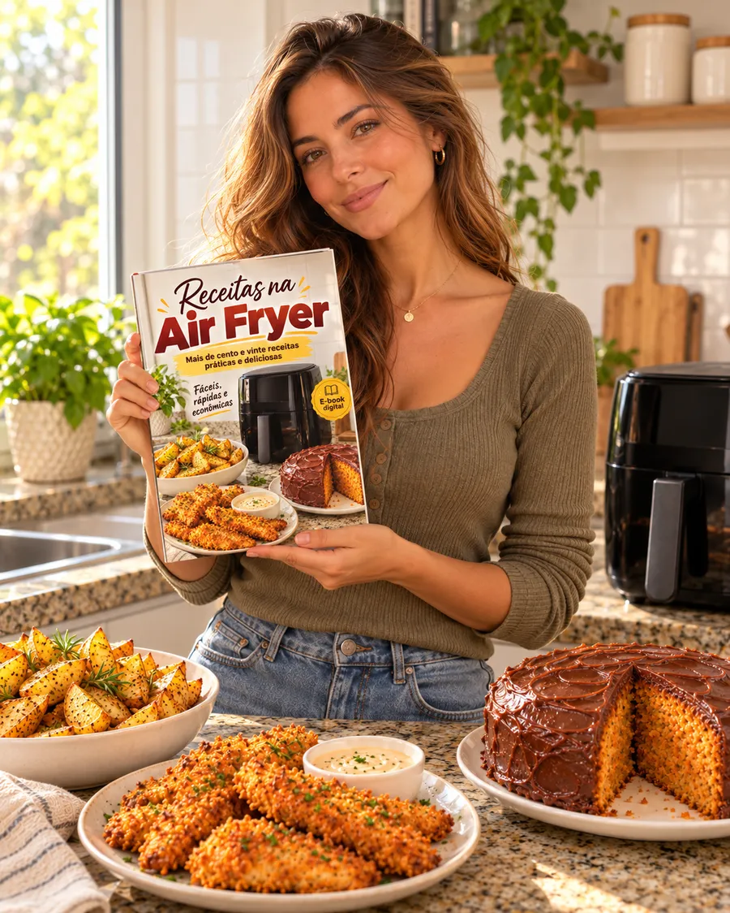
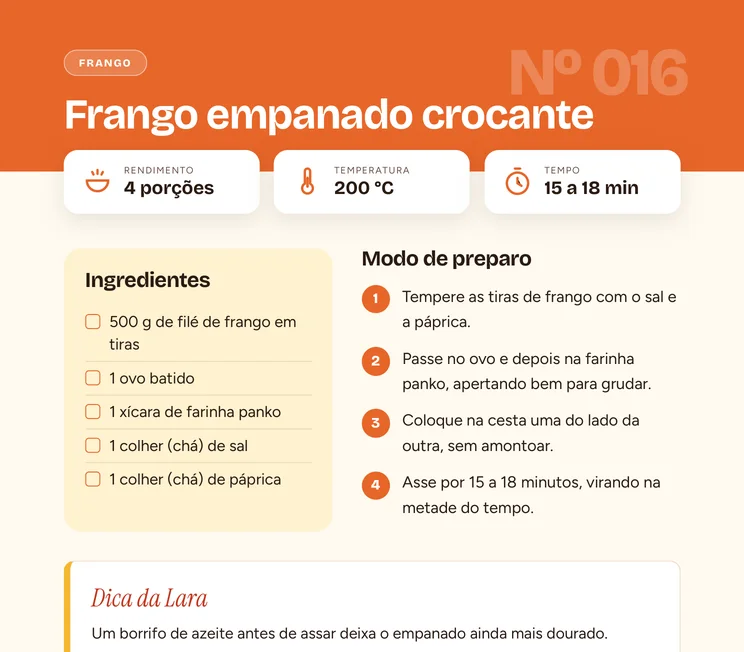
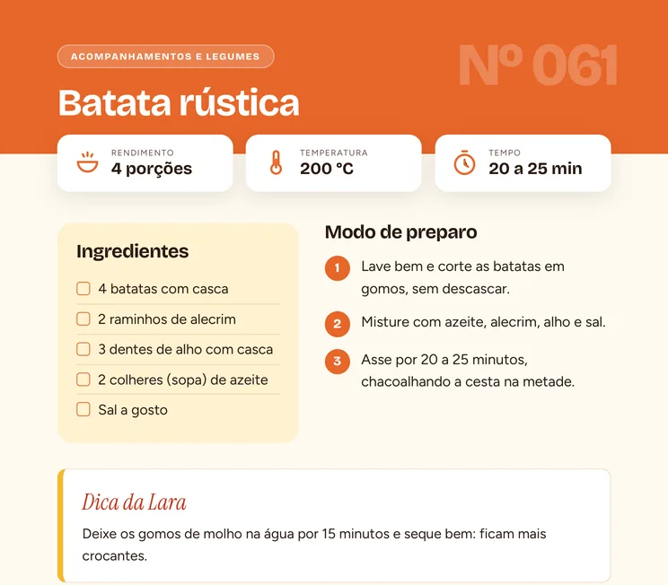
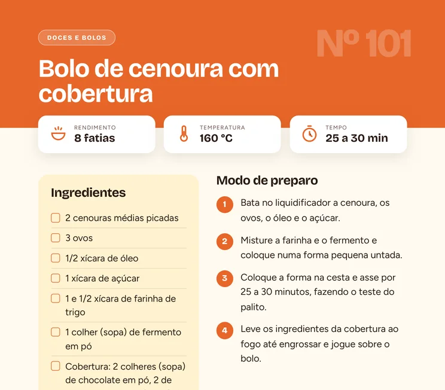
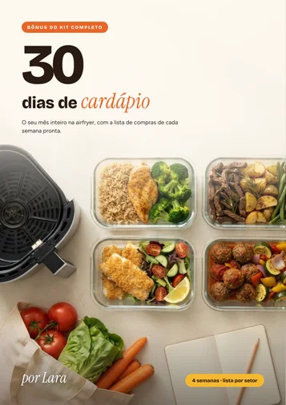
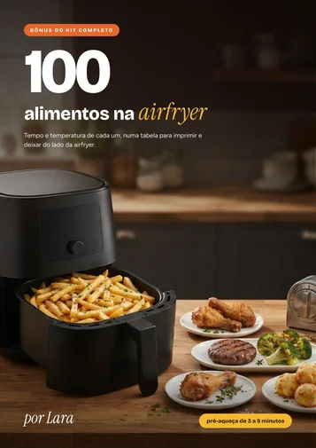
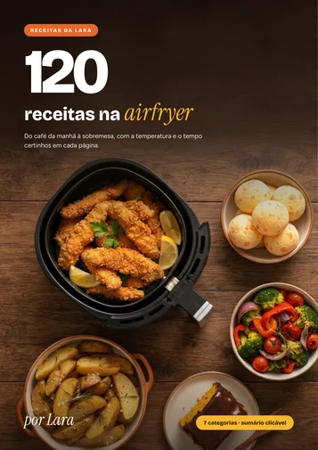
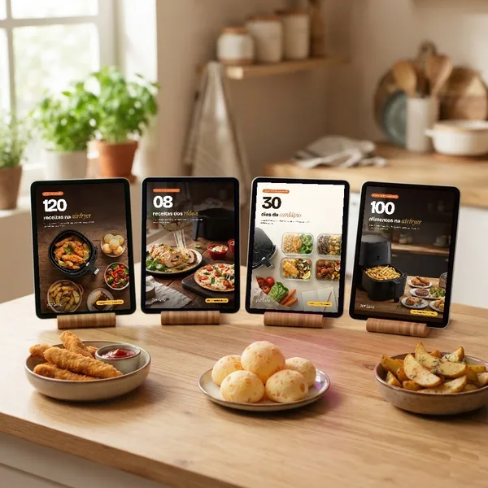

BÔNUS 1
Receitas dos Vídeos
Os 8 pratos que aparecem nos nossos vídeos, passo a passo: rocambole de frango, ovos com atum gratinados, pizza de Rap10, quiche e mais.
São 120 receitas fáceis, do café da manhã à sobremesa, com a temperatura e o tempo certinhos em cada página.
A partir de R$ 9,90. E-book em PDF que chega no seu e-mail e no seu WhatsApp logo após a compra.

Você olha para ela em cima da pia e pensa: batata de novo?
Ela custou caro, ocupa espaço na bancada e faz muito mais do que isso. O problema nunca foi a airfryer. É que ninguém tem tempo de assistir a um vídeo de 15 minutos para descobrir o que fazer no jantar de hoje.
Por isso a gente juntou as receitas que mais funcionam na airfryer num lugar só. Cada uma cabe numa página: você bate o olho nos ingredientes, vê a temperatura e o tempo e coloca na cesta.
batata, frango e pão de queijo, de novo
receitas com temperatura e tempo
Pão de queijo no café. Frango empanado no almoço. Rocambole no jantar. Bolo de cenoura no fim de semana. Sem ligar o forno e sem sujar um monte de louça.
Toque no botão e veja uma das 120 receitas do e-book, com temperatura e tempo.
Ingredientes e modo de preparo de cada uma estão no e-book.
Esse rocambole está no bônus Receitas dos Vídeos, que vem no Kit Completo. Cada receita traz ingredientes, modo de preparo, temperatura e tempo.
Cada receita ocupa uma página, com ingredientes, modo de preparo, rendimento, temperatura e tempo. No sumário, é só tocar no nome para ir direto até ela.



O Kit Completo traz as 120 receitas e mais três materiais para você decidir o que fazer, comprar o que precisa e acertar o ponto.
Os 8 pratos que aparecem nos nossos vídeos, passo a passo: rocambole de frango, ovos com atum gratinados, pizza de Rap10, quiche e mais.

As refeições das 4 semanas, usando as receitas do e-book, com a lista de compras de cada semana separada por setor do mercado.

Tempo e temperatura de 100 alimentos, de congelados a carnes e legumes, para imprimir e deixar do lado da airfryer.
O Básico traz as 120 receitas. O Kit Completo traz as receitas dos vídeos, o cardápio do mês e a tabela para deixar do lado da airfryer.

O e-book 120 Receitas na Airfryer

O e-book + 3 bônus
Comprando o e-book, o cardápio e a tabela separados: R$ 23,70
Garantia de 7 dias. Se não gostar, é só pedir o reembolso em até 7 dias após a compra e você recebe o valor de volta.
Os dois chegam no seu e-mail e no seu WhatsApp logo após a compra, em PDF. No Pix, a aprovação costuma ser na hora.
A airfryer virou a peça mais usada da cozinha de muita gente. Mas quase todo mundo faz sempre as mesmas três coisas nela: batata, frango e pão de queijo.
Por isso o Receitas da Lara reuniu receitas simples, com ingredientes de mercado comum, para você variar o cardápio sem passar horas na cozinha e sem sujar um monte de louça.
Assim que o pagamento é aprovado, o link para baixar chega no seu e-mail e no seu WhatsApp. No Pix, a aprovação costuma ser na hora.
O Básico é o e-book com as 120 receitas. O Kit Completo traz o mesmo e-book e mais três bônus: as Receitas dos Vídeos, o Cardápio de 30 Dias com lista de compras e a Tabela da Airfryer com 100 alimentos.
Elas estão no bônus Receitas dos Vídeos, que vem no Kit Completo.
Sim. As receitas trazem temperatura e tempo de referência. Como cada modelo tem seu ritmo, na primeira vez confira o ponto alguns minutos antes do final.
Sim. O PDF abre no celular, no tablet e no computador, e o sumário é clicável. Se preferir, também dá para imprimir.
Sim. Você paga uma vez e é seu. Não existe mensalidade.
Você tem 7 dias para pedir o reembolso, conforme o Código de Defesa do Consumidor para compras feitas pela internet.
São 120 receitas, do café à sobremesa, a partir de R$ 9,90.
Escolher o meuPagamento seguro. Acesso imediato pelo e-mail e pelo WhatsApp.